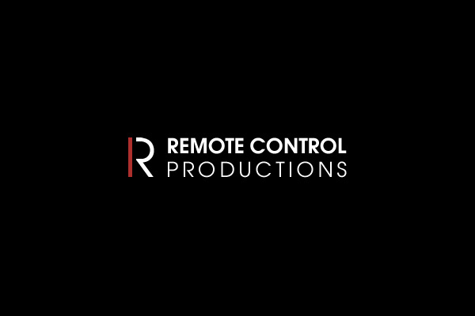

-
L'histoire des bandes originales,
un tournant dans l'histoire du cinémaAu cinéma, les musiques sont essentielles car elles sont reliées au images, mais chaque contient ses propres compositions intimement liés à son histoire. Des musiques sont donc crée spécialement pour raconter l'histoire de ces films. Les bandes originales sont aussi importantes que les images car elles permettent de transmettre des émotions et d'appuyer et d'accentuer celles déjà transmise par les images. Voici donc son histoire.
-
1895-1929
Le cinéma muet
Durant de nombreuses années, le cinéma était muet,plutôt sans sons, sans musiques. La musique était alors joué en direct durant la diffusion. Donc il n'existait pas de bandes originales.
-
1891-1896
L'arrivée des bandes originales et Thomas Edison
Edison est un inventeur, scientifique et industriel américain né en 1847 et mort en 1931. Il est alors l'inventeur de la General, l'une des premières puissances industrielles mondiales, il fut aussi un inventeur prolifique. C'est un pionner de l'électricité,diffuseur,vulgarisateur. Et surtout, il participa à l'invention du cinéma et de l'enregistrement du son.
Durant 1891 Thomas Edison présentait au public les premiers films du cinéma. Il rêver alors de coupler l'image et le son.
Mais ce ne sera qu'en 1892 que les premières musiques de films seont joués. Emile Reynaud avait inventé le dessin animé avec son théâtre optique. Il avait compris qu'en plus de ces dessins animés il devait ajouté un support rythmiques et donc ajouté de la musique. Il convint alors un homme nommé Gaston Paulin d'écrire des musiques spécifiques à ces dessins animés. Ce fut les premieres réels musique de film malgré quelles n'est jamais été enregistrées puisqu'il les jouaient au piano durant la diffusion. -
La première bande originale
Le compositeur Camille Saint-Saens accepte d'écrire pour la société de production Le Film d'art.
Ce fut la première musique originale pour un film, la premère réelle Bande Originale : le film muet L'assassinat du duc de Guise, réalisé par André Calmettes et Charles Le Bargy. -
1910
Catalogue musicaux
Dans les années 1910, rares sont les partitions écrites sur mesure pour un film. On recourt souvent, surtout dans les petites salles, à des recueils de morceaux originaux ou d'arrangements tout préparés. Parmi ceux-ci figurent les registres de Paul Fosse pour le Gaumont Palace (1911-1928), les Sam Fox Moving Picture Music Volumes (1913), la Kinothek (1919-1933) de Giuseppe Becce ou encore les Motion Pictures Moods for Pianists and Organists (1924) d'Ernö Rapée, adaptées à 52 atmosphères et situations différentes.
-
1920
Les musiques originales
Dans les années 1920, les musiques de film ce multiplie et de nombreux auteurs se mettent à écrire pour le cinéma français.
-
1927
Cinéma parlant
Dans les années 1927, le cinéma parlant apparait. La musique dans les années précédentes jouaient direct sur scène est désqrmais enregistrée et fixée sur un support. C'est donc la naissance de la bande originale proprement dite.
-
1930
Classiscisme hollywoodien
Peu après la sortie du Chanteur de jazz, qui marque l'arrivée du cinéma parlant, commence la période "classique" de l'âge d'or d'Hollywood. La musique est alors omniprésente et ont pour fonction une fonction illustrative.
-
1945
L'après guerre
Dans les années 1945, le cinéma et surtout la musique de film prennent un autre tournant. Les bandes originales sont désormais plus ciblée et moins omniprésente. De nouveaux genres apparaissent. Tout devient alors plus moderne.
-

1989
Musique numérique
En 1989, Hans Zimmer crée les studios Media Ventures (Remote Control Productions depuis 2003), qui donneront lieu aux plus importantes BO d'Hollywood jusqu'à aujourd'hui et feront naître les compositeurs les plus actifs du moment : John Powell, Klaus Badelt, Harry Gregson-Williams, Steve Jablonsky, Mark Mancina... D'autres comme Trevor Rabin n'y ont pas travaillé mais en sont proches. On parle parfois de "l'écurie Hans Zimmer" ; l'existence de telles structures est sans doute une des raisons de la standardisation des musiques de films hollywoodiennes, où prédominent les musiques d'ambiance (les thèmes ayant une forte identité sont en net repli) et dans lesquelles les textures se ressemblent, l'orchestre adoptant lui-même fréquemment un style électro fait de boucles maintes fois entendues...
-
2023
Musique moderne
La musique de film est alors devenu indissociable de l'image et de nombreux réalisateurs lui accordent une place particulière. Certains films sont alors devenu de grands succès come Rocky,...